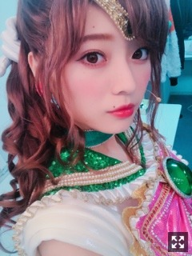
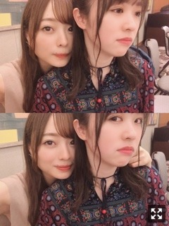

まっしろコーデ
みなさまこんにちは！
乃木坂46の
梅澤美波です！
いつもよりメイク薄め〜
な気がします！
舞台「ザンビ」
DVD & Blu-ray発売中です
懐かしいなあ〜。
体感型舞台だったのもあり
生で観るからこその良さや迫力もあるけど
画面の中からでも充分に伝わるかと思います
部屋を真っ暗にして
音をいつもより少しだけ、
大きめにして観て欲しいです。（笑）
悩みに悩んで演じた一ノ瀬杏奈！
簡単なものなんて何も無かったけど
確かに少しばかり強くなれた気がするなあ。
あそこまで振り切った役は初めてだったけど、
毎公演終わる度に
杏奈としての人生をしっかり終えたような達成感みたいなものを感じていました
もっともっと振り切った役を、
やってみたいなあ。
知らない自分を引き出せるくらい
もっともっと自分と掛け離れた誰かを演じてみたい！
欅坂46さん、日向坂46さんとの
初共演での舞台！
良い思い出です︎︎︎︎◎
いや〜でも、
舞台が映像になるのってとても嬉しいけど
物凄く恥ずかしいです( '-' )（笑）
あそこまで怯えてる顔が
画面に記録されてるのが照れくさい（笑）
部屋暗くして見ました！
怖かった！
ザンビプロジェクト、
色んな方面で始動していますね◎
コラボカフェや、7月31日〜は
「ザンビ THE ROOM 最後の選択」も！！
ぜひ楽しんでくださいね◎
そしておそくなってしまいましたが、
うたコン！にて、
「Sing Out！」そして
「ムーンライト伝説」を披露させて頂きました！
こんな機会中々ない、、
またあの曲を皆様の前で歌えるなんて思ってもみなかったので
本当に嬉しかったです。
ちょうど約一年前が
セラミュの初演本番でして
久しぶりに会えた方もたくさんいて
懐かしさですごく嬉しくなりました
なんだろう、
当時毎日会ってた方に久しぶりに会って
あの頃の光景がぽつぽつと
頭に浮かんでくるのです〜( '-' )
はあ、戻りたくなりました

またまこちゃんになれる日がくるかな〜
なんて( '-' )思ってしまう( '-' )
観てくださった皆様！
ありがとうございました！
お知らせ◎
▽「blt graph.」表紙
▽「FLASHスペシャル」ラジオ特集
▽「with」
▽「日経エンタテインメント！」
▽「週刊少年チャンピオン」表紙
▽「EX大衆」かきちゃんと対談
発売中です！
▽６／２２ 「BRODY」ラジオ特集
▽６／２８「with」
▽７／１「N46MODE vol.1」
〜ラジオ
▽毎週日曜「乃木坂46の『の』」
【文化放送 18:00~18:30】
〜TV
【24:00~24:30】

大好きなみりあさん。
膝の上に乗ってきてくれたので
カメラ構えたらこんな顔された( '-' )
かわいい。ツンデレ。
昨日はアルバムスペシャルイベントの
クルージングでした！
楽しかった〜
約2年ぶりかな？
ファンの皆様とクイズしました！
私のチームはみりあさんとももこと3人◎
いや〜楽しかった！
ファンの皆様の乃木坂愛を改めて感じて
助けられてばかりでした、、
ありがとうございました！
またこういう機会があったらいいな( '-' )
ももこ〜
前回載せ忘れてたお花も！
昨日カラオケ行きました☺︎
ももことは音楽の趣味合うのです〜
オススメした曲どハマりしてくれるから
嬉しくなりますね、ふふ
この間は
七つの大罪 The STAGEでお世話になった
毛利さんが脚本、演出をされている
朗読劇「ダークアリス」観てきました
素敵な世界観でした
惹き込まれました。
音楽も、踊りも、魅力的でした。
お話の内容も心に響く内容でした！
面白かった〜
またご一緒できるよう頑張ります！！
色々吸収したいなあ〜
足りないものだらけです。
では
また更新します
おやすみなさい
気づけばもうこんな時期。早い。
１９時になっても外がうっすら明るいので
時間の感覚がおかしくなってまう
さっき少し歩いてきました〜
夜風が気持ちかったです。
もっと涼しい方が好きだったりもするけど
夏が来たんだなあと思いますね◎
Original：https://www.nogizaka46.com/s/n46/diary/detail/51185?ima=4943&cd=MEMBER